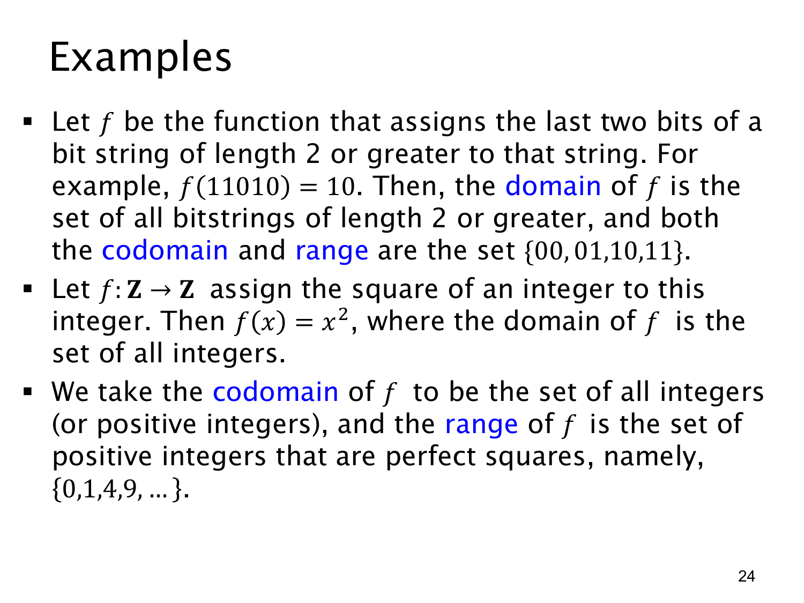

L1.4 · 第 24 页讲解原文
查看这一页课件

两个函数例子：末两位与整数平方
例一：截取位串末两位。输入是长度至少为 2 的位串，函数 f 返回最后两个比特。例如 f(11010)=10。定义域是所有长度至少为 2 的位串；课件把陪域设为 {00,01,10,11}。这四种结果都能由长度为 2 的输入直接产生，所以值域也正好是 {00,01,10,11}。长度为 1 的位串不在定义域内，不能要求函数对它给出“末两位”。
例二：整数平方。课件写 f:Z→Z，f(x)=x2。定义域是全部整数；若陪域按这个声明取 Z，函数的实际值域是
f(Z)={0,1,4,9,16,…}.
它只包含非负完全平方整数，并非所有整数。例如 −1 在陪域 Z 中，却不是任何整数的平方；0 则是 f(0)，确实在值域中。这个例子清楚显示陪域可以大于值域。
原页后一句说陪域也可取“正整数”，并把 {0,1,4,9,…} 称为“正整数中的完全平方数”，这与f(0)=0 且 0 不是正整数冲突。若保持定义域为全部 Z，陪域可以取 Z 或非负整数 {0,1,2,…}，不能取严格正整数 Z+。这个问题另列勘误；原页图及本页讲解仍照实保留。
查看本页勘误
L1.4 第 24 页：平方函数的陪域与值域
课件设 f:Z→Z 且 f(x)=x2，后来又说陪域可以取“正整数”，并将值域 {0,1,4,9,…} 称作“正整数中的完全平方数”。由于 0∈Z 且 f(0)=0，严格正整数集 Z+={1,2,3,…} 不能作为这个函数的陪域；值域也应称为“非负完全平方整数”。
若保留定义域 Z，可取陪域 Z 或非负整数集 {0,1,2,…}。若一定要以正整数为陪域，则需把定义域改成不含 0 的集合，且重新说明函数声明。原课件图和讲解原文保持不变，本勘误单独列出条件冲突。